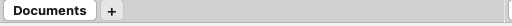

Faner
Hvert panel kan holde flere mapper på én gang som faner, så du kan have de steder, du bruger ofte, kun ét klik væk i stedet for at navigere frem og tilbage. Faner tilhører ét enkelt panel: venstre og højre panel holder hver deres række af faner, og at skifte eller lukke en fane påvirker kun det aktive panel. En lille fanelinje vises over fillisten, med én brik pr. åben fane plus en afsluttende "+"-knap.
Arbejde med faner
- Klik på et panel for at gøre det aktivt. Nye faner åbner altid i det aktive panel.
- Vælg Vis > Ny fane, eller tryk på Cmd+T, for at åbne en ny fane på den aktuelle mappe. Du kan også klikke på "+"-knappen for enden af fanelinjen.
- Klik på en fanebrik for at skifte til den, eller tryk på Cmd+} for den næste fane og Cmd+{ for den forrige.
- For at lukke den aktuelle fane, vælg Vis > Luk fane eller tryk på Cmd+W. Du kan også midterklikke på en fanebrik for at lukke den. Vælg Vis > Luk alle faner for at fjerne alle undtagen den aktuelle.

(Figur: fanelinjen sidder over fillisten, med én brik pr. fane og en "+"-knap til at åbne en ny.)Åbn en mappe i en ny fane
- Flyt markøren til en mappe i fillisten.
- Vælg Vis > Åbn mappe i ny fane (Cmd+Shift+T) for at åbne den mappe i en ny fane i det samme panel.
- For at åbne en fane uden at forlade den aktuelle, vælg Vis > Ny fane i baggrunden.
Lås en fane
At låse en fane holder den fastgjort til sin mappe. Markér fanen og vælg Vis > Lås fane. Et lille låseikon vises på fanebrikken. Når en fane er låst, åbner navigering til en anden mappe den mappe i en ny fane i stedet for at ændre den låste, så dit fastgjorte sted forbliver. Vælg menupunktet igen for at låse den op.
Genveje
| Handling | Genvej |
|---|---|
| Ny fane | Cmd+T |
| Ny fane i baggrunden | Vis > Ny fane i baggrunden |
| Åbn mappen under markøren i en ny fane | Cmd+Shift+T |
| Luk aktuel fane | Cmd+W |
| Næste fane | Cmd+} |
| Forrige fane | Cmd+{ |
| Lås/lås op fane | Vis > Lås fane |
Tips
- Højreklik på en fanebrik for hurtige handlinger som at duplikere eller lukke den fane.
- Faner er pr. panel. Brug dem til at have en arbejdsmappe og en målmappe side om side, og skift så mellem dem uden at miste din plads.
- Låsning er praktisk for en mappe, du ofte vender tilbage til: du kan bladre væk fra den og stadig finde den uændret på sin fane.